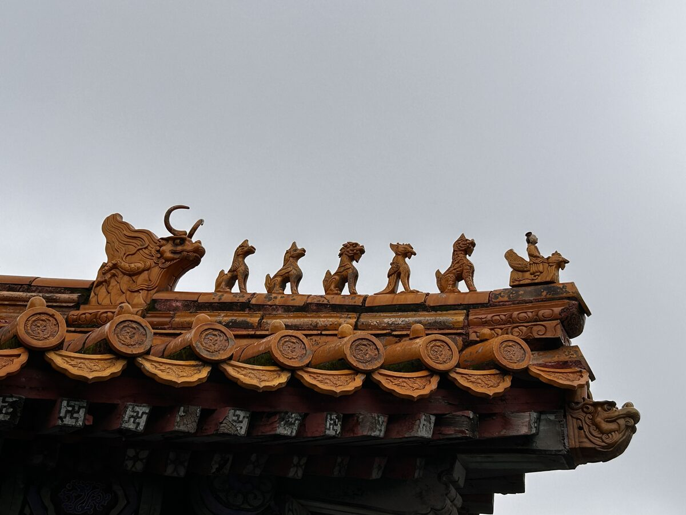
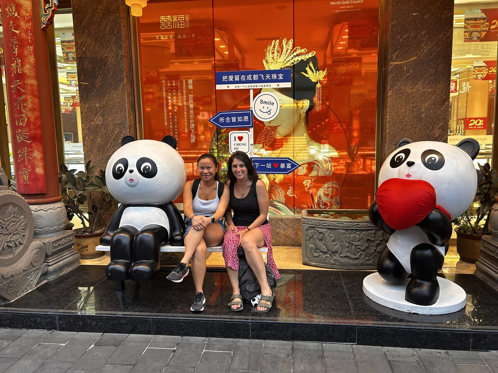

Un país de mil versiones
Continuando la serie sobre China
Lo que más me está costando de China es responder a una pregunta aparentemente muy sencilla.
¿Cómo es China?
Y es que cualquier respuesta que dé se queda corta.
Porque China no es una cosa. Son cientos de ellas conviviendo al mismo tiempo.
Quizá por eso me siento tan cómoda aquí.
Lo que he encontrado es un país loco, pero en el sentido más hermoso de la palabra. Para mí, la locura no deja de ser algo que me acompaña y me hace vibrar intenso. Me permite ser, en un mismo día, cientos de versiones de mí misma, y sentirlas todas integradas.
Joven y madura.
Serena y exaltada.
Jefa, rebelde y, cuando toca, también sumisa.
Traviesa, bailarina, lectora, fiestera y reservada.
Hogareña y aventurera.
De campo y de ciudad.
Senderista, sonriente, amante y amada.
Espiritual e inmensamente disfrutona.
Tantas versiones... y todas, todas tan yo.
Y si yo, en mi pequeña locura, soy cientos de versiones de una sola persona, ¿cuántas versiones puede ser un país de 1.400 millones de habitantes?
Una clase media inmensa
Aquí conviven ciudades de más de treinta millones de personas con aldeas perdidas entre montañas. Miles y miles de edificios de viviendas de tal envergadura que soy incapaz de imaginar cuántas familias viven en ellos.
Y, sin embargo, aún no he visto la pobreza.
Dicen que el gobierno chino se tomó muy en serio erradicarla hace unos quince años y, sea cual sea el camino que siguieron para conseguirlo, lo cierto es que lo que yo he encontrado es una inmensa clase media. Millones y millones de personas con educación, con valores y con una vida que dista mucho de la imagen que yo traía en la cabeza.
He encontrado personas respetuosas entre ellas. Con nosotras, por ser extranjeras. Con los mayores. Con las normas.
Una sociedad profundamente jerárquica, y precisamente ahí empieza uno de los grandes conflictos internos que me llevo de este viaje.

Entender una cultura desde la mía
Intentar entender una cultura desde la mía es mucho más difícil de lo que imaginaba.
El confucianismo, una doctrina filosófica con más de dos mil años de historia, propone un orden social basado en las jerarquías, donde la obediencia es una virtud y cada persona ocupa un lugar dentro del conjunto. El gobernante es el "padre" del pueblo. Durante siglos, la lealtad fue premiada y la desobediencia duramente castigada.
Y, de alguna manera, siento que esa forma de entender el mundo sigue muy presente.
China continúa siendo un país gobernado por un único partido. No existe el derecho al voto tal y como lo entendemos en Europa, ni la libertad de prensa o de expresión. Hay cámaras de reconocimiento facial por todas partes, aplicaciones para prácticamente cualquier pago, buscadores censurados y una vigilancia constante que, como occidental, no deja de impresionarme.
Sin embargo, al mismo tiempo, veo trenes que llegan puntuales, ciudades limpias, infraestructuras que funcionan, hospitales, colegios, seguridad y una sensación de prosperidad que resulta imposible ignorar.
Y entonces vuelvo a quedarme sin respuestas.
Porque mi cabeza intenta decidir si esto está bien o está mal.
Pero la realidad no parece tener tanto interés en responderme. Simplemente es.
Sin suficiente contexto para juzgar
Pienso en todo lo que ha vivido este país en apenas unas décadas. En una población que pasó hambre, que no podía decidir dónde vivir, qué profesión ejercer o, durante años, ni siquiera cuántos hijos tener. Pienso en el miedo que debió de dejar la Revolución Cultural. En generaciones enteras aprendiendo que cuestionar podía tener consecuencias demasiado duras.
Y entonces entiendo que quizá yo no tenga suficiente contexto para juzgar.
Ni suficiente historia para comprender del todo.
Lo único que puedo hacer es observar.
Escuchar.
Intentar entender.
Y aceptar que este país no cabe dentro de una sola opinión.
Porque China es tradición y futuro.
Silencio y neones.
Templos donde el tiempo parece haberse detenido y ciudades como Chongqing, donde los edificios parecen crecer hasta tocar las nubes y los robots sirven la comida.

Es taoísmo y consumo.
Es disciplina y calidez.
Es una contradicción permanente.
Y quizá por eso me fascina tanto.
Porque cuanto más intento definir China, más me doy cuenta de que tampoco yo puedo definirme con una sola palabra.
Quizá ese sea el regalo más inesperado de este viaje.
Entender que ni los países ni las personas estamos hechos para caber dentro de una etiqueta.
Y que, igual que yo puedo ser todas mis versiones sin dejar de ser yo, China también puede ser todas las suyas al mismo tiempo.